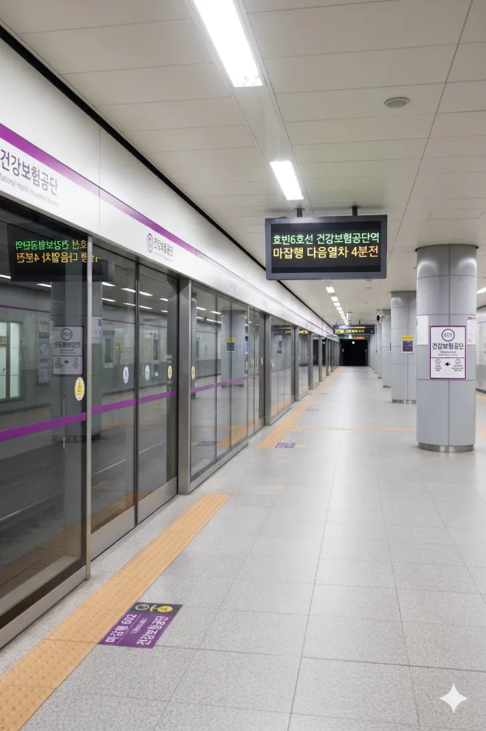

건강보험공단역
1. 개요
효빈 도시철도 6호선 621번. 효빈광역시 북구 고송동 654 소재. 역명 그대로 인근에 건강보험공단 효빈덕북지역본부가 위치해 있어 붙여진 이름이다. 단순한 공공기관 역이라기엔 배후 수요가 워낙 탄탄해 출퇴근 시간대는 물론 평시에도 엄청난 유동인구를 자랑하는, 그야말로 효빈교통공사의 알짜배기 캐시카우 역 중 하나다.
2. 역 정보
고송대로를 따라 남북으로 길게 지어진 역이다. 전형적인 지하철역의 모습을 갖추고 있으며, 역 주변으로 고송 SK뷰 2차, 고송엔제르아파트, 고송대방디엠시티 등 대단지 주거 타운이 병풍처럼 둘러싸고 있다. 공공기관(건강보험공단, 우체국)과 노인종합복지관, 고송시장 등 상업/복지 인프라가 한데 모여 있어 평일 대낮에도 북적거리는 역동적인 분위기가 특징이다. 이름만 들으면 역 안에 병원비 정산소가 있을 것 같지만 아파트가 더 많다
3. 역 주변 정보
3.1. 출구 및 시설 상세 안내
 건강보험공단역 출구 정보
건강보험공단역 출구 정보
|
||
|---|---|---|
| 번호 | 주요 시설 및 방향 | 비고 |
| 1 | 건강보험공단 효빈덕북지역본부 효빈고송3동우체국 | 관공서 밀집 구역. 항상 민원인들로 붐빈다. |
| 2 | 고송 SK뷰 2차 아파트 고송휴먼시아 2차 | |
| 3 | 고송 노인종합복지관 (효빈복지재단) 고송시장 | 효빈권 전철 어르신 운임 납부의 성지 |
| 4 | 고송대방디엠시티 고송건강공원 대람호텔 (3성급) 청덕 하나리움 1차 (서구 청덕3동) | 청덕동과 고송동의 경계에 위치해 접근성 우수 |
| 5 | 고송엔제르아파트 고송 휴먼빌 아파트 | |
4. 일평균 이용객
|
건강보험공단역 이용객 통계
| ||
|---|---|---|
| 연도 | 일평균 이용객 | 비고 |
| 2020년 | 12,834명 | |
| 2021년 | 13,675명 | |
| 2022년 | 15,051명 | |
| 2023년 | 15,099명 | |
| 2024년 | 15,429명 | 역대 최고치 갱신 |
코로나 직후부터 꺾임 없이 무서운 속도로 이용객 수가 증가하고 있다. 서류상 역명은 공단이지만, 실질적으로는 고송 SK뷰 2차, 대방디엠시티, 휴먼시아 등 인근 초대형 주거 단지에서 쏟아져 나오는 직장인과 학생들의 통근/통학 수요가 멱살을 잡고 끌어올리는 중이다. 게다가 후술할 어르신들의 경이로운 자발적 요금 납부 문화 덕분에, 이 역은 승하차량 대비 실제 수익률이 다른 역들을 씹어먹는 수준으로 유명하다. 효빈교통공사 사장님이 이 역 방향으로 매일 절을 한다는 소문이 있다
5. 승강장

6호선 승강장 전경
| 고송 ↑ | ||||
| 하 | ㅣ | ㅣ | 상 | |
| ↓ 고송나루 | ||||
6. 연계 교통
| 구분 | 정류소명 | 노선 번호 |
|---|---|---|
| 순방향 | 건보 | 6, 9, 20, 105 |
| 역방향 | 건보(건너편) | 06-1, 09-1, 20-1, 105-1 |
7. 여담
- 마스코트 라세나와 1번 출구의 대환장 콜라보: 6호선의 공식 마스코트이자 뱅드림의 미나토 유키나를 쏙 빼닮은 '라세나'의 공식 등신대가 이 역 대합실에 세워져 있다. 그런데 하필 설치 위치가 건강보험료를 내러 가는 1번 출구 건강보험공단 방면 앞이다. 체납된 건보료 고지서를 들고 한숨을 푹푹 쉬며 걸어가는 중장년층 민원인들과, 그 옆에서 화려한 자태의 라세나 등신대와 브이를 하며 인증샷을 찍는 철도 덕후들의 동선이 기막히게 겹치면서 매우 아스트랄하고 이질적인 풍경이 매일같이 연출된다.
라세나한테 건보료 좀 깎아달라고 비는 어르신이 1년에 한 명씩은 꼭 나온다고 카더라 - 어르신들의 '무임승차 거부' 자존심의 성지: 이 역 3번 출구 앞에는 대규모 시설인 고송 노인종합복지관과 고송시장이 있어 평일 한낮에도 노년층 승객이 엄청나게 많다. 타 도시라면 무임승차 비율이 1위를 찍고도 남을 환경이지만, 효빈권 전철의 가장 위대한(?) 특징인 '노인들의 맹렬한 전철 사랑과 자발적 요금 납부'가 이 역에서 가장 극적으로 나타난다. 시 자체 복지로 교통비 지원이 나옴에도 불구하고 "우리가 어릴 적부터 탄 전차인데 우리가 돈 안 내면 누가 유지하냐!"며 기어코 일반 요금을 내고 타는 어르신들이 수두룩하다. 이 역 개찰구에서는 하루 종일 일반 교통카드 찍히는 소리만 울려 퍼진다.
- 💬 효빈권 전철의 전설적인 5배 운임 미담: 한 번은 70대 어르신이 깜빡하고 지갑과 카드를 모두 집에 두고 와서 전철을 못 타게 되자 개찰구 앞에서 깊게 좌절하고 있었다. 이를 본 역무원이 다가가 "어르신은 원래 경로 연령이시고, 타 지역에서는 어차피 다 무료로 타시니까 오늘은 그냥 들어가셔도 됩니다."라며 게이트를 열어주었다. 어르신은 매우 찜찜해하며 우선 탑승하셨는데... 며칠 뒤 굳이 역무실을 다시 찾아와 "내 평생 우리 효빈 전차를 공짜로 타본 적이 없다!"며 당시 운임의 5배를 현금으로 쾌척하고 가신 일화가 전설처럼 내려오고 있다. 이 사건 이후 건강보험공단역은 효빈 어르신들의 프라이드를 상징하는 역이 되었다.
- 구(區) 경계를 넘나드는 청덕 하나리움 1차 입주민들: 4번 출구 방면의 청덕 하나리움 1차 아파트는 행정구역상 서구 청덕3동에 속하지만, 역이 위치한 북구 고송동과 말 그대로 '길 하나 차이'로 딱 붙어 있어 완벽한 초역세권을 자랑한다. 분양 당시 건설사가 '건강보험공단역 초역세권 단지!'라고 대대적으로 홍보했을 때 고송동 주민들이 "서구 사람들이 무슨 우리 동네 역세권이냐"며 코웃음을 쳤으나, 막상 입주가 시작되자 진짜로 도보 5분 컷이라는 게 밝혀져 오히려 부러움을 샀다. 덕분에 평일 아침마다 서구 주민들이 길을 건너 북구로 넘어와 지하철을 타는 진풍경이 매일 벌어지고 있다.
- 대람호텔의 주말 이중생활: 역에서 도보 5분 거리(469m)에 위치한 3성급 대람호텔은 평일에는 건강보험공단이나 우체국으로 출장 온 타 지역 공무원과 직장인들이 묵는 평범하고 조용한 비즈니스 숙소다. 하지만 효빈 북구에서 대형 서브컬처 행사나 코스프레 페스티벌이 열리는 주말만 되면 호텔의 정체성이 180도 뒤집힌다. 행사장과의 접근성이 미치도록 좋으면서도 가성비가 훌륭하다는 입소문이 퍼지면서, 전국 각지에서 몰려든 뱅드림, 러브라이브 코스튬 플레이어들의 베이스캠프로 완전히 점령당한다. 일요일 아침 조식 뷔페에서 정장을 입은 출장객 옆에 풀 세팅을 마친 타카마츠 토모리 코스어와 니지가사키 교복 코스어들이 나란히 시리얼을 퍼먹는 진풍경을 감상할 수 있다.